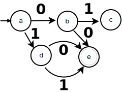

{kind=link}
¿Cómo se aplica el algoritmo?
Ejercicio 1
Ejercicio 2
¿Cómo se usa la tabla de transiciones?
¿Cómo se aplica el método del árbol?
Preguntas
Trabajo individual
Pregunta 1 Considerar un simple buscador Web que toma como entrada una cadena textual en formato HTML que despliega las graficas especificadas en la pantalla. ¿Es el proceso de despliegue un proceso decompilación o un proceso de interpretación?
Pregunta 2 En el diseño de un compilador, te enfrentarás a muchas consideraciones. ¿Cuáles son las cinco cualidades que tú, como usuario, consideras más importantes en un compilador que tú comprarías? ¿Qué cambia de la lista cuándo tú estas construyendo el compilador? ¿Qué dices de la lista cuándo implementas al compilador?
Pregunta 3 Los compiladores se usan en cirscunstancias diferentes. ¿Qué diferencias se pueden esperar en el diseño de un compilador para las siguientes aplicaciones? a.- Un compilador en tiempo real usado para traducir el código de una interface de usuario cargado para una red. b.- Un compilador tiene por objetivo el procesador embebido usado en un teléfono celular. c.- Un compilador usado en un curso de introducción a la programación. d.- Un compilador usado para construir la simulación de un tunel de viento que funciona en procesadores paralelos masivos (los procesadores son identicos). e.- Un compilador que tiene como objetivo programas intesivamente numéricos para grandes números en diversas máquinas.
Pregunta 4 Los diferentes lenguajes de programación usan diferente notación para representar: a.- Enteros no negativos en c en bases de 10 y 16. b.- Enteros no negativos en VHDL que puede incluir subrayados (un subrayado no puede ocurrir como primero o último caracter). c.- Moneda, en dólares, representada como un número decimal positivo redondeado a la centésima más cercana. Dichos números comienzan con el carácter $, tiene comas separando cada grupo de tres dígitos a la izquierda del punto decimal, y terminar con dos dígitos a la derecha del punto decimal, por ejemplo, $8,937.43 y $7,777,777.77.
Pregunta 5 Escribe una expresión regular para describir cada uno de los siguientes construcciones del lenguaje de programación: a. Cualquier secuencia de tabulaciones y espacios en blanco (a veces llamados espacios en blanco) b. Comentarios en el lenguaje de programación c C. Constantes de cadena (sin caracteres de escape) d. Números de punto flotante
Ejercicios
Trabajo colectivo
Completar el proceso en cada uno de los siguientes ejercicios hasta obtener un analizador léxico:
Ejercicio 1
Pizarrón, archivo dia: SNCompiladores/AlP1E1.dia

Ejercicio 2
Pizarrón, archivo dia: SNCompiladores/AlP1E2.dia

Ejercicio 3
Pizarrón, archivo dia: SNCompiladores/AlP1E3.dia
Ejercicio 4
Pizarrón, archivo dia: SNCompiladores/AlP1E4.dia
Ejercicio 5
Pizarrón, archivo dia: SNCompiladores/AlP1E5.dia